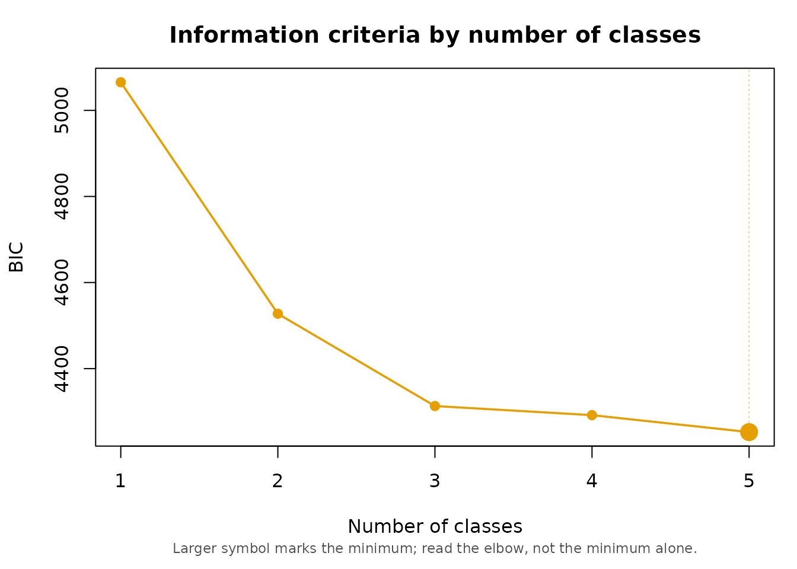
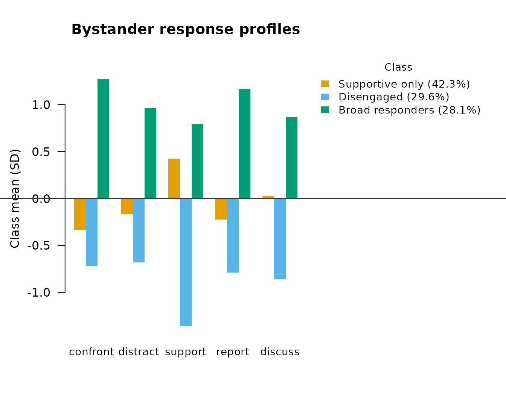

Latent Profile Analysis: Bystander Responses to Sexual Harassment
Source:vignettes/liang_ark_lpa.Rmd
liang_ark_lpa.RmdWhat this dataset is
liang_ark_sim is simulated data. It is drawn from the
published parameters of Liang and Ark’s Study 2 three-class latent
profile solution, not from actual survey responses, and it contains no
real bystander accounts. Fit statistics, standard errors and p-values
computed on it below describe the simulation faithfully reproducing the
published solution, not new findings about workplace bystander behavior,
and should not be cited as such.
Two columns exist only because the data are synthetic and no real
dataset would carry them: class_true, the profile each case
was actually drawn from, and boundary, which flags cases
drawn from a blend of two profiles rather than one. This vignette
deliberately does not look at either column until the very end, fitting
the model exactly as an applied researcher would on real data.
data(liang_ark_sim)
str(liang_ark_sim)
#> 'data.frame': 300 obs. of 19 variables:
#> $ id : int 1 2 3 4 5 6 7 8 9 10 ...
#> $ age : num 30 44 31 28 30 24 30 19 18 35 ...
#> $ male : int 0 0 0 0 1 1 0 0 0 1 ...
#> $ org_intolerance_sh : num 4 2.67 5 4.67 4 ...
#> $ masc_job_context : num 0.53 0.1 0.31 0.61 0.5 0.85 0.65 0.62 0.2 0.83 ...
#> $ sh_experience : num 2.07 1 1.04 1.43 1.36 ...
#> $ anger : num 4.67 5 4 5 4.67 ...
#> $ empathy : num 4.33 4.67 4 4.33 4.33 ...
#> $ curb_expectancy : num 3.5 4.25 4 4.25 3 2.75 4.5 4.75 3.75 4.25 ...
#> $ confront : num 1 4.67 1.33 4.33 3.33 ...
#> $ distract : num 1.5 3.75 2.75 4 2.75 2.25 1 4 1.75 4 ...
#> $ support : num 4.75 5 3.75 4.5 5 4 4 3.25 3.75 5 ...
#> $ report : num 1 4.67 1 4.33 2.67 ...
#> $ discuss : num 1.5 3.25 2.5 1 3 5 2.25 2.5 1.5 3.25 ...
#> $ harasser_aggression : num 1 2 3 4 1 3 2 2 3 3 ...
#> $ target_gratitude : num 3 2 3 5 3 2 4 3 4 3 ...
#> $ third_party_elevation: num 3.25 2 4 3 1.5 2 1.5 3.5 3.25 2.25 ...
#> $ class_true : int 1 3 1 3 3 1 1 3 3 3 ...
#> $ boundary : logi TRUE FALSE FALSE FALSE TRUE FALSE ...The five latent profile indicators are bystander actions in response
to witnessing sexual harassment at work: confront (direct
confrontation of the harasser), distract (distraction or
interruption), support (emotional support to the target),
report (reporting to an authority), and
discuss (speaking with the target afterwards).
How many profiles?
Equal (class-invariant) variances first — this is what the original
study fitted and what fit_mixture() defaults to.
ind <- liang_ark_sim[, c("confront", "distract", "support", "report", "discuss")]
set.seed(1)
comp <- compare_mixtures(ind, k_range = 1:5, measurement = "continuous",
variances_equal = TRUE, n_init = 20)
#> Running Model Selection across K = 1 to 5...
#>
#> Fitting 1-class model...
#> Fitting 2-class model...
#> Fitting 3-class model...
#> Fitting 4-class model...
#> Fitting 5-class model...
#>
#> === Model Selection Summary ===
#> Classes LL Params AIC BIC SABIC Entropy Unreplicated
#> 1 1 -2504.138 10 5028.276 5065.314 5033.600 1.000 FALSE
#> 2 2 -2218.115 16 4468.230 4527.490 4476.748 0.877 FALSE
#> 3 3 -2093.758 22 4231.515 4312.998 4243.227 0.900 FALSE
#> 4 4 -2066.064 28 4188.127 4291.833 4203.034 0.871 FALSE
#> 5 5 -2029.260 34 4126.519 4252.448 4144.620 0.878 FALSE
#>
#> -> Best model according to BIC: 5 classes
comp
#> $fit_table
#> Classes LL Params AIC BIC SABIC Entropy Unreplicated
#> 1 1 -2504.138 10 5028.276 5065.314 5033.600 1.0000000 FALSE
#> 2 2 -2218.115 16 4468.230 4527.490 4476.748 0.8774316 FALSE
#> 3 3 -2093.758 22 4231.515 4312.998 4243.227 0.9001248 FALSE
#> 4 4 -2066.064 28 4188.127 4291.833 4203.034 0.8706635 FALSE
#> 5 5 -2029.260 34 4126.519 4252.448 4144.620 0.8775933 FALSE
#>
#> $models
#> $models$K1
#> =========================================================
#> LATENT MIXTURE MODEL
#> =========================================================
#> Classes Estimated : 1
#> Estimation Method : 1-step
#> Converged : TRUE (in 3 iterations)
#> ---------------------------------------------------------
#> Log-Likelihood : -2504.14
#> Parameters : 10
#> AIC : 5028.28
#> BIC : 5065.31
#> SABIC : 5033.60
#> Rel. Entropy : 1.0000
#> Best solution : found by 20 of 20 starts
#> ---------------------------------------------------------
#> Class Weights (Sizes):
#> Class 1: 100.00%
#> =========================================================
#> Type summary(model) for structural parameters or measurement_summary(model) for item parameters.
#>
#> $models$K2
#> =========================================================
#> LATENT MIXTURE MODEL
#> =========================================================
#> Classes Estimated : 2
#> Estimation Method : 1-step
#> Converged : TRUE (in 23 iterations)
#> ---------------------------------------------------------
#> Log-Likelihood : -2218.11
#> Parameters : 16
#> AIC : 4468.23
#> BIC : 4527.49
#> SABIC : 4476.75
#> Rel. Entropy : 0.8774
#> Best solution : found by 19 of 20 starts
#> ---------------------------------------------------------
#> Class Weights (Sizes):
#> Class 1: 62.90%
#> Class 2: 37.10%
#> =========================================================
#> Type summary(model) for structural parameters or measurement_summary(model) for item parameters.
#>
#> $models$K3
#> =========================================================
#> LATENT MIXTURE MODEL
#> =========================================================
#> Classes Estimated : 3
#> Estimation Method : 1-step
#> Converged : TRUE (in 16 iterations)
#> ---------------------------------------------------------
#> Log-Likelihood : -2093.76
#> Parameters : 22
#> AIC : 4231.52
#> BIC : 4313.00
#> SABIC : 4243.23
#> Rel. Entropy : 0.9001
#> Best solution : found by 20 of 20 starts
#> ---------------------------------------------------------
#> Class Weights (Sizes):
#> Class 1: 42.27%
#> Class 2: 29.61%
#> Class 3: 28.12%
#> =========================================================
#> Type summary(model) for structural parameters or measurement_summary(model) for item parameters.
#>
#> $models$K4
#> =========================================================
#> LATENT MIXTURE MODEL
#> =========================================================
#> Classes Estimated : 4
#> Estimation Method : 1-step
#> Converged : TRUE (in 32 iterations)
#> ---------------------------------------------------------
#> Log-Likelihood : -2066.06
#> Parameters : 28
#> AIC : 4188.13
#> BIC : 4291.83
#> SABIC : 4203.03
#> Rel. Entropy : 0.8707
#> Best solution : found by 13 of 20 starts
#> ---------------------------------------------------------
#> Class Weights (Sizes):
#> Class 1: 33.52%
#> Class 2: 29.56%
#> Class 3: 24.15%
#> Class 4: 12.77%
#> =========================================================
#> Type summary(model) for structural parameters or measurement_summary(model) for item parameters.
#>
#> $models$K5
#> =========================================================
#> LATENT MIXTURE MODEL
#> =========================================================
#> Classes Estimated : 5
#> Estimation Method : 1-step
#> Converged : TRUE (in 44 iterations)
#> ---------------------------------------------------------
#> Log-Likelihood : -2029.26
#> Parameters : 34
#> AIC : 4126.52
#> BIC : 4252.45
#> SABIC : 4144.62
#> Rel. Entropy : 0.8776
#> Best solution : found by 9 of 20 starts
#> ---------------------------------------------------------
#> Class Weights (Sizes):
#> Class 1: 28.30%
#> Class 2: 27.94%
#> Class 3: 19.48%
#> Class 4: 13.55%
#> Class 5: 10.74%
#> =========================================================
#> Type summary(model) for structural parameters or measurement_summary(model) for item parameters.
#>
#>
#> $best_k
#> [1] 5
#>
#> attr(,"class")
#> [1] "mixture_comparison"
plot(comp)
BIC keeps improving out to five classes here, which is common with information criteria on a modest sample: the criterion never turns a corner and instead trades off against a solution getting harder to interpret and to replicate. The published analysis specified three profiles, and the section below carries that forward.
What happens when you free the variances
set.seed(2)
free_v <- fit_mixture(ind, n_classes = 3, measurement = "continuous",
variances_equal = FALSE, n_init = 30)
#> Warning: A class variance has collapsed towards zero: report in class 2
#> (variance 0.0101 vs 1.96 for the item overall). These estimates are not
#> interpretable, and this fit's BIC cannot be compared with a clean fit's. Three
#> ways out, to choose between on substantive grounds: (1) variances_equal = TRUE;
#> (2) fewer classes; or (3) a stronger prior, bayes_constants = list(variances =
#> 3). See ?fit_mixture for why, and what to check afterwards.Freeing the residual variances lets a class shrink onto a handful of cases and drive its own variance toward zero, which sends the likelihood to infinity and makes the solution uninterpretable; the package warns exactly this happened above. The prior on the variances (default strength 1) stops this from happening when set stronger:
set.seed(2)
free_v_fixed <- fit_mixture(ind, n_classes = 3, measurement = "continuous",
variances_equal = FALSE, n_init = 30,
bayes_constants = list(variances = 3))
free_v_fixed
#> =========================================================
#> LATENT MIXTURE MODEL
#> =========================================================
#> Classes Estimated : 3
#> Estimation Method : 1-step
#> Converged : TRUE (in 64 iterations)
#> ---------------------------------------------------------
#> Log-Likelihood : -1921.84
#> Parameters : 32
#> AIC : 3907.69
#> BIC : 4026.21
#> SABIC : 3924.72
#> Rel. Entropy : 0.8758
#> Best solution : found by 4 of 30 starts
#> ---------------------------------------------------------
#> Class Weights (Sizes):
#> Class 1: 41.77%
#> Class 2: 31.98%
#> Class 3: 26.26%
#> =========================================================
#> Type summary(model) for structural parameters or measurement_summary(model) for item parameters.Setting the prior’s strength to the number of classes is the setting that behaves the same way whatever K is. Even so, the equal-variance model is the one this vignette carries forward: it is what the published analysis specified, and parsimony is a real argument here, not a consolation prize for the free model being illegitimate.
The three-profile solution
fit <- fit_mixture(ind, n_classes = 3, measurement = "continuous",
variances_equal = TRUE, n_init = 20, random_state = 7)
fit
#> =========================================================
#> LATENT MIXTURE MODEL
#> =========================================================
#> Classes Estimated : 3
#> Estimation Method : 1-step
#> Converged : TRUE (in 19 iterations)
#> ---------------------------------------------------------
#> Log-Likelihood : -2093.76
#> Parameters : 22
#> AIC : 4231.52
#> BIC : 4313.00
#> SABIC : 4243.23
#> Rel. Entropy : 0.9001
#> Best solution : found by 20 of 20 starts
#> ---------------------------------------------------------
#> Class Weights (Sizes):
#> Class 1: 42.28%
#> Class 2: 29.61%
#> Class 3: 28.11%
#> =========================================================
#> Type summary(model) for structural parameters or measurement_summary(model) for item parameters.
params <- measurement_summary(fit)
#> =========================================================
#> MEASUREMENT MODEL PARAMETERS
#> =========================================================
#>
#> CONTINUOUS MEANS
#> Indicator | Overall | Class 1 | Class 2 | Class 3
#> ------------------------------------------------------------
#> confront | 2.228 | 1.817 | 1.351 | 3.770
#> distract | 2.524 | 2.327 | 1.707 | 3.682
#> support | 3.615 | 4.218 | 1.673 | 4.753
#> report | 2.330 | 2.015 | 1.228 | 3.965
#> discuss | 2.483 | 2.514 | 1.448 | 3.528
#> =========================================================Classes come out sorted by size. Reading params: class 1
is high on support and unremarkable elsewhere, class 2 is
low on all five indicators, and class 3 is high on all five. That is
supportive only, disengaged, and broad
responders, in that order:
plot(fit, type = "bar",
class_labels = c("Supportive only", "Disengaged", "Broad responders"),
main = "Bystander response profiles")
Who ends up in which profile? (covariates)
covs <- add_covariates(
fit,
~ age + male + sh_experience + org_intolerance_sh + masc_job_context +
anger + empathy + curb_expectancy,
data = liang_ark_sim
)
#> Using 'ML' bias correction (set `correction` to override).
summary(covs)
#> =========================================================
#> STRUCTURAL MODEL SUMMARY
#> =========================================================
#>
#> CATEGORICAL LATENT VARIABLE REGRESSION (CLASS PREDICTORS)
#> Reference Class: 1
#> Standard errors: Bakk-Oberski-Vermunt corrected (robust step 3, hessian step 1)
#> ---------------------------------------------------------
#> OR [95% CI] P-Value
#>
#> Class 2 ON
#> Intercept 15.294 [ 0.461, 507.920] 0.127
#> age 0.987 [ 0.955, 1.020] 0.446
#> male 4.507 [ 2.252, 9.019] < .001
#> sh_experience 0.538 [ 0.239, 1.212] 0.135
#> org_intolerance_sh 1.821 [ 1.110, 2.988] 0.018
#> masc_job_context 0.630 [ 0.154, 2.574] 0.520
#> anger 0.577 [ 0.333, 1.000] 0.050
#> empathy 0.874 [ 0.489, 1.563] 0.651
#> curb_expectancy 0.608 [ 0.386, 0.959] 0.032
#>
#> Class 3 ON
#> Intercept 0.000 [ 0.000, 0.059] 0.002
#> age 0.968 [ 0.935, 1.001] 0.059
#> male 1.414 [ 0.660, 3.029] 0.373
#> sh_experience 1.635 [ 0.890, 3.004] 0.113
#> org_intolerance_sh 1.575 [ 1.052, 2.359] 0.027
#> masc_job_context 0.338 [ 0.085, 1.355] 0.126
#> anger 2.778 [ 1.234, 6.254] 0.014
#> empathy 1.125 [ 0.604, 2.093] 0.711
#> curb_expectancy 1.348 [ 0.797, 2.278] 0.265
#>
#> OMNIBUS TEST PER COVARIATE (effect across all classes)
#> ---------------------------------------------------------
#> Wald Chi2 df P-Value
#> age 3.579 2 0.167
#> male 18.895 2 < .001
#> sh_experience 6.409 2 0.041
#> org_intolerance_sh 8.647 2 0.013
#> masc_job_context 2.358 2 0.308
#> anger 14.481 2 < .001
#> empathy 0.562 2 0.755
#> curb_expectancy 8.457 2 0.015
#> Note: a non-significant test beside large coefficients can be the
#> Hauck-Donner effect; confirm with wald_omnibus_test().
#> =========================================================This is the three-step approach: the measurement model above is not re-estimated when the covariates go in, and the classification error from step three is corrected for. The reference class is class 1 (“Supportive only”), the default; the coefficients above read as the log-odds (and odds ratios) of landing in class 2 or 3 rather than class 1. Men are considerably more likely than women to be classified into the “Disengaged” profile rather than “Supportive only”, and higher perceived organizational intolerance of harassment and higher anger both shift the odds toward the more active profiles.
These coefficients are approximate even as a reproduction of the
published study, because the simulated covariates were generated from
class-conditional marginal moments while the published logits are
mutually adjusted. Signs and rough magnitudes reproduce for the
covariates that were significant in the original; age and
masc_job_context were not significant there and their signs
here are noise.
What follows from the profile? (distal outcomes)
summary(add_outcome(fit, liang_ark_sim$harasser_aggression,
outcome_type = "continuous"))
#> Using 'BCH' bias correction (set `correction` to override).
#> =========================================================
#> STRUCTURAL MODEL SUMMARY
#> =========================================================
#>
#> CONTINUOUS DISTAL OUTCOME (MEANS)
#> ---------------------------------------------------------
#>
#> Omnibus test (class differences): Wald chi^2(2) = 219.08, p < .001
#>
#> Mean [95% CI] SE
#> Class 1 2.622 [ 2.414, 2.831] 0.106
#> Class 2 1.346 [ 1.204, 1.489] 0.073
#> Class 3 3.151 [ 2.932, 3.370] 0.112
#>
#> Pairwise class differences:
#> Difference [95% CI] P-Value
#> Class 2 vs 1 -1.276 [-1.535, -1.017] < .001
#> Class 3 vs 1 0.528 [ 0.220, 0.837] < .001
#> Class 3 vs 2 1.804 [ 1.544, 2.065] < .001
#> =========================================================
summary(add_outcome(fit, liang_ark_sim$target_gratitude,
outcome_type = "continuous"))
#> Using 'BCH' bias correction (set `correction` to override).
#> =========================================================
#> STRUCTURAL MODEL SUMMARY
#> =========================================================
#>
#> CONTINUOUS DISTAL OUTCOME (MEANS)
#> ---------------------------------------------------------
#>
#> Omnibus test (class differences): Wald chi^2(2) = 94.66, p < .001
#>
#> Mean [95% CI] SE
#> Class 1 3.179 [ 2.980, 3.377] 0.101
#> Class 2 1.942 [ 1.696, 2.188] 0.126
#> Class 3 3.592 [ 3.340, 3.844] 0.129
#>
#> Pairwise class differences:
#> Difference [95% CI] P-Value
#> Class 2 vs 1 -1.237 [-1.558, -0.915] < .001
#> Class 3 vs 1 0.413 [ 0.083, 0.743] 0.014
#> Class 3 vs 2 1.650 [ 1.298, 2.002] < .001
#> =========================================================
summary(add_outcome(fit, liang_ark_sim$third_party_elevation,
outcome_type = "continuous"))
#> Using 'BCH' bias correction (set `correction` to override).
#> =========================================================
#> STRUCTURAL MODEL SUMMARY
#> =========================================================
#>
#> CONTINUOUS DISTAL OUTCOME (MEANS)
#> ---------------------------------------------------------
#>
#> Omnibus test (class differences): Wald chi^2(2) = 84.24, p < .001
#>
#> Mean [95% CI] SE
#> Class 1 2.386 [ 2.215, 2.556] 0.087
#> Class 2 1.651 [ 1.436, 1.866] 0.110
#> Class 3 3.072 [ 2.858, 3.287] 0.109
#>
#> Pairwise class differences:
#> Difference [95% CI] P-Value
#> Class 2 vs 1 -0.735 [-1.014, -0.455] < .001
#> Class 3 vs 1 0.687 [ 0.404, 0.969] < .001
#> Class 3 vs 2 1.421 [ 1.118, 1.725] < .001
#> =========================================================Across all three outcomes the pattern is the same shape as the profiles themselves: the “Disengaged” class scores lowest and “Broad responders” scores highest, with “Supportive only” in between, and every pairwise contrast is significant. Confronting or reporting a harasser draws more aggression from them, but it is also what earns the target’s gratitude and what elevates third parties’ view of the situation — the active profiles pay a real cost and get a real benefit. These are BCH-corrected means, not plain averages within the modal-assigned class, so the classification error in step three is already accounted for.
A closing check the reader could not do with real data
table(class_assignments(fit), liang_ark_sim$class_true)
#>
#> 1 2 3
#> 1 102 8 17
#> 2 7 80 2
#> 3 6 4 74
classification_diagnostics(fit)
#> =========================================================
#> AVERAGE POSTERIOR PROBABILITIES (AvePP)
#> =========================================================
#> Rows: Modal Assignment | Columns: Mean Probability
#>
#> Prob C 1 Prob C 2 Prob C 3
#> Assigned Class 1 0.947 0.019 0.034
#> Assigned Class 2 0.034 0.966 0.000
#> Assigned Class 3 0.043 0.004 0.953
#> =========================================================
#>
#> =========================================================
#> CLASSIFICATION TABLE
#> =========================================================
#> Rows: model-expected membership | Columns: modal assignment
#>
#> Modal 1 Modal 2 Modal 3 Total
#> Class 1 120.2867 2.9888 3.6374 126.9129
#> Class 2 2.4505 85.9894 0.3405 88.7804
#> Class 3 4.2628 0.0217 80.0221 84.3067
#> Total 127.0000 89.0000 84.0000 300.0000
#>
#> Classification error: 0.0457 (4.57% of 300 cases)
#> =========================================================About 85% of cases are assigned to the profile they were actually
simulated from. That is the realistic figure, not a shortfall: the
generating design deliberately includes genuinely ambiguous respondents
(the boundary column, ignored everywhere above) so that
entropy lands near the published value of about 0.90 rather than the
artificially sharp separation you get by simulating from a correctly
specified model with no overlap. A real analysis has no
class_true to check against, which is exactly what
classification_diagnostics() is for.
References
Liang, Y., & Park, Y. (2025). A spectrum of bystander actions: Latent profile analysis of sexual harassment intervention behavior at work. Journal of Applied Psychology. Advance online publication. https://dx.doi.org/10.1037/apl0001280.